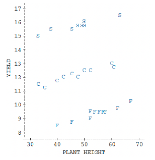

Example 16.1.1.
The effects of a slow-release fertilizer (S) and a fast-release fertilizer (F) on seed yield of peanut plants were compared to a control (C), which is a standard fertilizer, with 10 replications of each treatment. The researcher recognized that the 30 plants were not at the same level of development thus their heights were recorded at the start of the experiment.
| Control (C) | Slow Release (S) | Fast Release (F) | |||
| Yield | Height | Yield | Height | Yield | Height |
| 12.2 | 45 | 16.6 | 63 | 9.5 | 52 |
| 12.4 | 52 | 15.8 | 50 | 9.5 | 54 |
| 11.9 | 42 | 16.5 | 63 | 9.6 | 58 |
| 11.3 | 35 | 15 | 33 | 8.8 | 45 |
| 11.8 | 40 | 15.4 | 38 | 9.5 | 57 |
| 12.1 | 48 | 15.6 | 45 | 9.8 | 62 |
| 13.1 | 60 | 15.8 | 50 | 9.1 | 52 |
| 12.7 | 61 | 15.8 | 48 | 10.3 | 67 |
| 12.4 | 50 | 16 | 50 | 9.5 | 55 |
| 11.4 | 33 | 15.8 | 49 | 8.5 | 40 |
The results are plotted below.

Slow release (S) appears to show a higher yield than the other two. The yield also tends to depend on the initial height of the plant; we need to take the covariate into account for more accurate estimates of treatment effects.